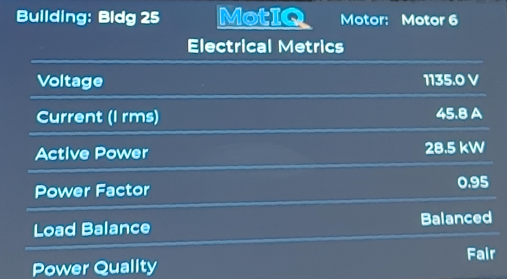
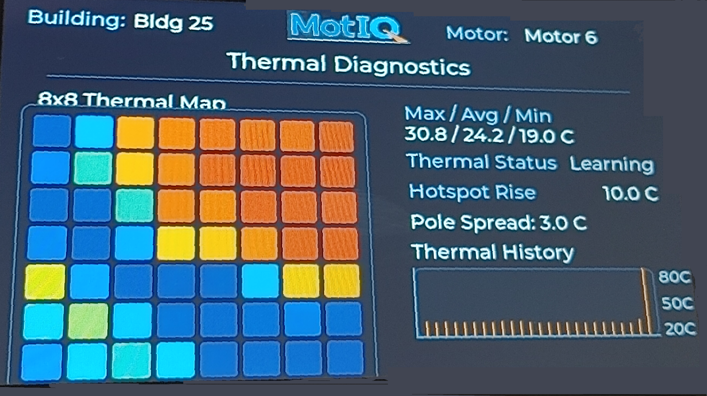

Monitor, detect, and prevent
equipment failure early.
Predictive + Active
Before Failure
Continuously Analysed
8×8 IR Array
Start · Auto · Stop
Why Select MotIQ
Six reasons facilities rely on MotIQ to protect their critical motor assets.
Four Capabilities.
One Device.
Motor Health Analysis
MotIQ continuously analyses the electrical behaviour of the motor to detect both mechanical and electrical faults developing inside the machine, often weeks before they reach an alarm level or affect operations.
- Developing rotor & stator faults
- Misalignment & eccentricity
- Bearing wear indicators
Power Monitoring
Continuous three-phase power measurement tracks energy consumption and power quality, identifying waste, inefficiency, and voltage anomalies in real time.
- Active, reactive & apparent power
- Power factor
- Many more...
Thermal Imaging
An integrated 8×8 infrared array monitors motor contactors and electrical connections for heat buildup, catching hotspots before insulation fails or a breaker trips.
- Contactor temperature (0–80°C)
- Connection hotspot detection
- Many more...
Motor Control
Automates motor start and stop based on process conditions, temperature, pressure, or external dry-contact signals, with full manual override from the panel at any time.
- Remote start/stop via dry contact
- Condition-based automation (temp & pressure)
- Many more...
Every fault has a window.
Miss it, and the cost multiplies.
The faults MotIQ monitors don't appear suddenly. They develop over weeks or months, leaving a detectable trail long before a motor trips or fails. Acting inside that window is the difference between a planned repair and an emergency shutdown.
Electrical & Rotor Faults
A broken rotor bar or developing eccentricity leaves a subtle signature in the motor current waveform. MotIQ reads this signature continuously. No production stop. No sensor on the motor itself.
Power Quality & Energy Loss
Poor power factor and voltage unbalance silently drain energy and accelerate motor wear. MotIQ quantifies the loss and gives you the data to correct it, per motor.
Contactor Overheating
An oxidised terminal or loose connection creates resistance that generates heat. That heat builds invisibly inside the enclosure until insulation fails or the contactor trips, often catastrophically. MotIQ's 8×8 IR array catches it first.
Cost figures are illustrative examples based on industry estimates. Actual results vary by facility, asset size, and operating conditions.
How early is early enough?
MotIQ detects developing faults weeks before a traditional alarm fires, giving your team a window to plan, schedule, and act without emergency costs.
Scenarios are illustrative. Detection timing depends on fault type, motor size, and operating conditions.
See Everything.
In Real Time.
MotIQ's LCD gives operators instant visibility into motor health, power quality, and thermal status, directly from the panel.


Ready to See MotIQ
in Your Facility?
Every motor installation is different. Talk to our team about your assets, your panel configuration, and what early electrical and thermal detection could mean for your operations.